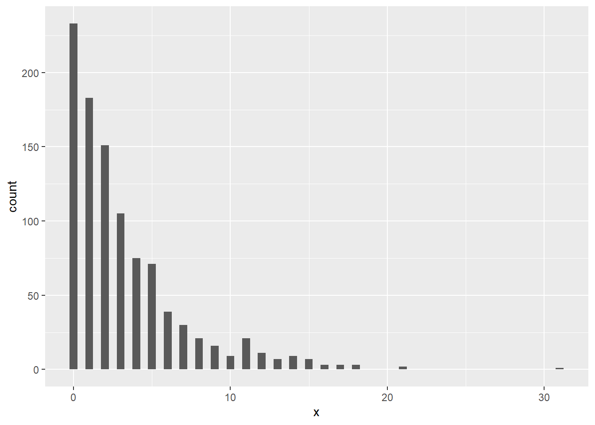
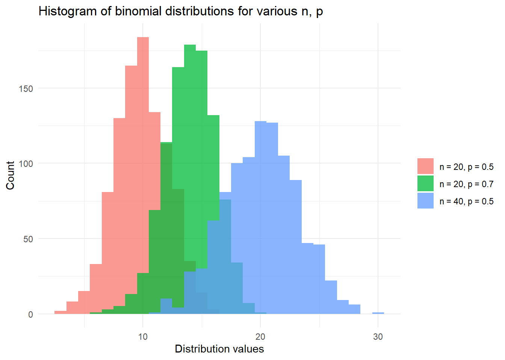
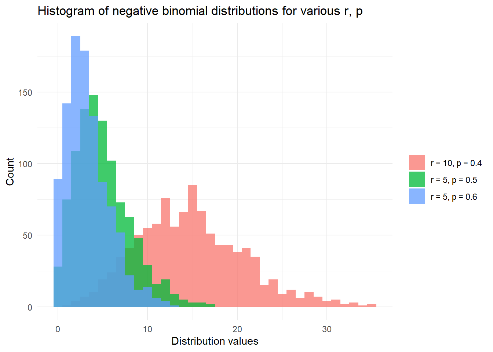
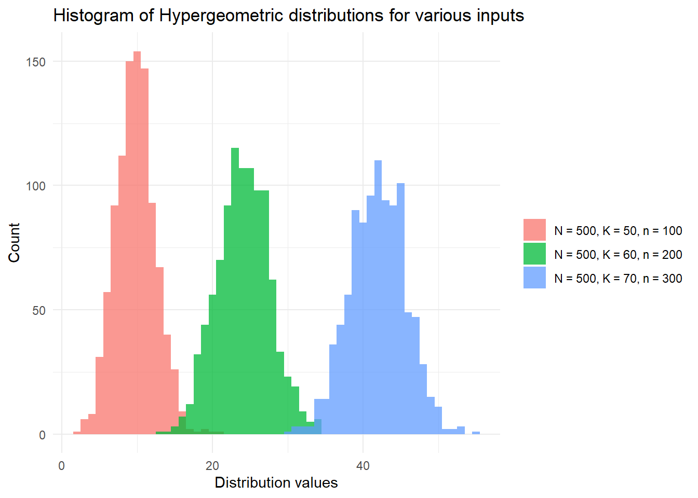
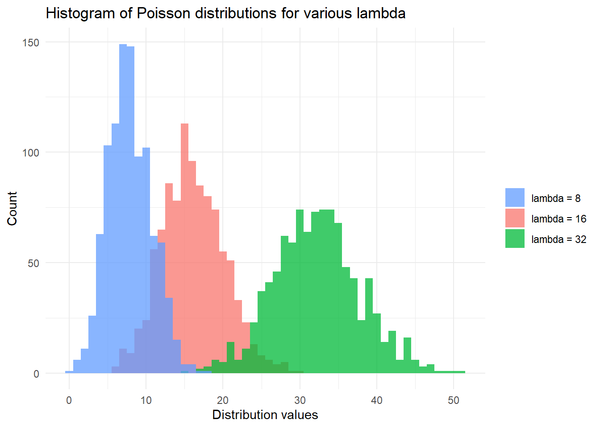
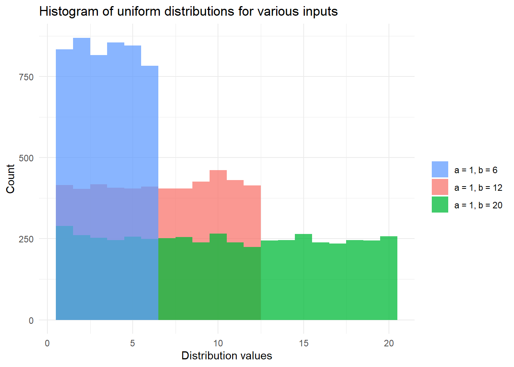
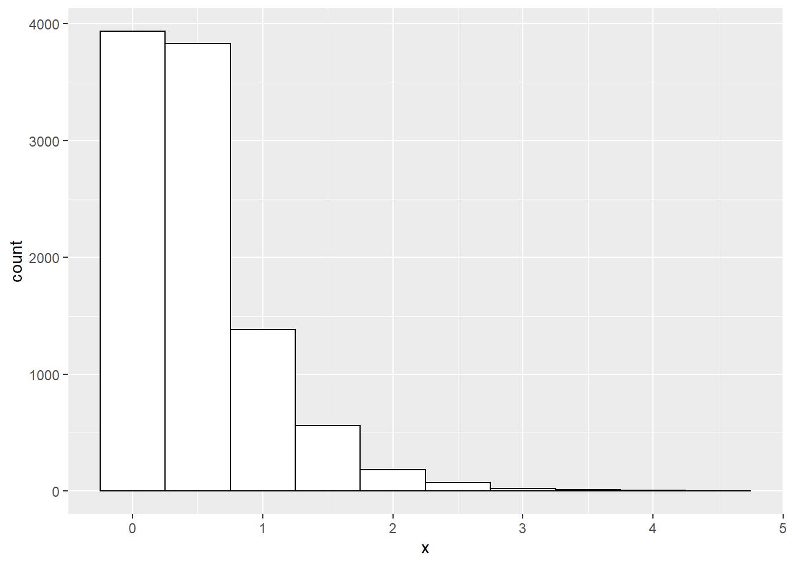

Chapter 2 Univarite Probability Distributions
Learning Objectives
- Define and explain the key characteristics of the discrete distributions:
- geometric,
- binomial,
- negative binomial,
- hypergeometric,
- Poisson and
- uniform on a finite set.
- Define and explain the key characteristics of the continous distributions:
- normal,
- lognormal,
- exponential,
- gamma,
- chi-square,
- \(t\),
- \(F\),
- beta and
- uniform on an interval.
- Evaluate probabilities and quantiles associated with distributions.
- Define and explain the key characteristics of the Poisson process and explain the connection between the Poisson process and the Poisson distribution.
- Generate discrete and continous random variables using the inverse transform method.
Theory
R was designed to be used for statistical computing - so it handles randomness well!
Using R we can guarantee reproducibility (and enhance sharability) by using the function set.seed(seed) where seed is a single value integer. Using this approach we guarantee the generation of the same sequence of random numbers everytime we call this function. Use ?set.seed to learn more about this function.
Let’s see set.seed in action:
# We make five random draws from the integer range [1, 10]
# We cannot guarantee reproducing this outcome when sharing the code:
sample(1:10, 5)## [1] 6 7 9 4 1# Now we set a seed value before making the five random draws
# We guarantee a fixed output which enhances reproducibility and sharability:
set.seed(42) # Fixes result
# Using set.seed(42) we guarantee five random draws within the integer range [1, 10] will be:
# 1, 5, 10, 8, 2
sample(1:10, 5)## [1] 1 5 10 8 2# We can re-initialise the seed with the same value
# Observe that the same sequence of random numbers are generated:
set.seed(42) # Fixes result
# Guarantee we draw 1, 5, 10, 8, 2 again
sample(1:10, 5)## [1] 1 5 10 8 22.1 In-built probability distributions
R has in-built functions for probability distributions:
- d<distribution-name> \(:=\) density (“PDF”), i.e. \(f_X(x)\)
- p<distribution-name> \(:=\) probability distribution cumulative function (“CDF”), i.e. \(F_X(x) =\boldsymbol{P}(X \leq x)\)
- q<distribution-name> \(:=\) quantile function, i.e. return \(x\) such that \(\boldsymbol{P}(X \leq x) = p\)
- r<distribution-name> \(:=\) random deviates, i.e. (psuedo) random number generator for a given distribution
- Where <distribution-name> \(=\) Normal, uniform, lognormal, Student’s \(t\), Poisson, binormal, Weibull … see
?distributions()for more information
To give some quick examples (we will explore these in more detail later in this chapter):
| R Code | Definition |
|---|---|
rnorm(1) |
Generates \(x_1\) where \(X \sim \mathcal{N}(0,\,1)\) |
rnorm(y, mean=10, sd=2) |
Generates \(\{y_1,\,y_2,\,\dots\}\) with \(Y \sim \mathcal{N}(10,\,2^2)\) |
runif(3, min=5, max=10) |
Generates \(\{z_1,\,z_2,\,z_3\}\) where \(Z \sim \mathcal{U}(5,\,10)\) |
dbinom(4, size=5, prob=0.5) |
Computes \(\boldsymbol{P}(X = 4)\) where \(X \sim Bin(5,\,0.5)\) |
pgamma(0.2, shape=2, rate=2) |
Computes \(F_Y(0.2)\) where \(Y \sim \mathcal{\Gamma}(2,\,2)\), i.e. \(\boldsymbol{P}(Y\leq 0.2)\) |
qexp(0.5, rate = 2) |
Determines smallest value of \(z\) for \(\boldsymbol{P}(Z \leq z) = 0.5\) where \(Z \sim Exp(2)\) |
2.2 Discrete probability distributions
We will consider how to interact with the following discrete probability distributions in R:
- Geometric
- Binomial
- Negative binomial
- Hypergeometric
- Poisson
- Uniform (on a finite set)
For each distribution above we will determine how to calculate:
- A random deviate following the discrete distribution \(X\),
- The probability mass function (“PMF”), \(P(X = k)\) for distribution \(X\) and \(-\infty < k < \infty\) (noting the \(PMF = 0\) for most values of \(k\)),
- The cumulative distribution function (“CDF”), \(P(X \leq k)\),
- A range of PMFs, i.e. \(P(k_1 <= X <= k_2)\), and
- The quantile function to find \(k\) representing the value such that \(P(X \leq k) = p\), i.e. the pth percentile.
We will finish off with a plot of the distribution.
2.2.1 Geometric distribution
The geometric probability distribution (\(X\)) can be defined by the number of failures (\(k\)) in Bernoulli trials before achieving a success. A Bernoulli trial is a random experiment with exactly two outcomes, {“success”, “failure”}, in which the probability of success is constant in every experiment. More formally, if we have \(k \in \{0,\,1,\,2,\, \dots \}\) independent, identically distributed (“i.i.d.”) Bernoulli trials before a “success” with the \(P(\)“success”\()\) on each trial defined as \(p\), then:
\[P(X = k) = (1 - p)^{k}p\]
We have \(X \sim Geo(p)\) with \(p \in (0, 1]\).
In R we can generate random deviates following a geometric distribution using the function rgeom(n, prob) where:
- n is the number of random deviates we want to generate, and
- prob is the probability of success in any given Bernoulli trial.
# Guarantee reproducibility
set.seed(42)
# Generate 5 random deviates following X~Geo(0.25)
rgeom(5, 0.25)## [1] 1 1 0 1 2If we wanted to find the xth percentile of \(X \sim Geo(p)\) we would use the quantile function, qgeom(p, prob).
# Find the 99th percentile of X~Geo(0.25)
percentile_99 <- qgeom(0.99, 0.25)
paste0(
"The 99th percentile of X~Geo(0.25) is ",
percentile_99,
"."
)## [1] "The 99th percentile of X~Geo(0.25) is 16."If we wish to find \(P(X \leq k)\) then we need to use the function for the cumulative distribution function, pgeom(q, prob) where:
- q equates to \(k\) failures before success in a sequence of i.i.d. Bernoulli trials,
- prob is the probability of success in any given Bernoulli trial.
# Find P(X <= 7) with X~Geo(0.25)
prob_geom <- pgeom(7, 0.25)
paste0(
"P(X <= 7) with X~Geo(0.25) is ",
format(prob_geom, digits = 4),
"."
)## [1] "P(X <= 7) with X~Geo(0.25) is 0.8999."We can find \(P(X = k)\) using the dgeom() function call:
We find that \(P(X = 7) =\) 0.0333709716796875.
It helps to visualise the probability distribution. We can do this in base R with the plot() function. However for illustrative purposes we will use the ggplot2 package from the tidyverse suite of packages. ggplot2 allows for rich visualisations3 using a consistent syntax.
# Plot the distribution function of X~Geo(0.25)
library(ggplot2)
df <- data.frame(x = rgeom(1000, 0.25))
ggplot(df, aes(x=x)) + geom_histogram(binwidth = 0.5)
2.2.2 Binomial distribution
The binomial probability distribution (\(Y\)) can be defined by the number of successes in a sequence of \(n\) i.i.d. Bernoulli trials. A Bernoulli trial is a random experiment with exactly two outcomes, {“success”, “failure”}, wherein the probability of success is \(p\). We often state the probability of failure as \(q = 1 - p\) for convenience. More formally, if we have \(k \in \{0,\,1,\,2,\, \dots,\, n \}\) successes given \(n\) i.i.d. Bernoulli trials with the \(P(\)“success”\()\) on each trial defined as \(p\), then:
\[P(Y = k) = \binom{n}{k}p^k(1 - p)^{n - k}\]
It can help to think of this as:
- \(p^k\) chance of \(k\) successes,
- \((1 - p)^{n - k}\) chance of \(n - k\) failures,
- the ordering of the \(k\) successes can occur anywhere within the \(n\) trials, hence \(\binom{n}{k}\).
We can generate random deviates following the binomial distribution \(Y \sim Bin(n,\,p)\) using rbinom(n, size, prob) where:
- n is the number of random deviates we want to generate,
- size is the number of i.i.d. Bernoulli trials performed, and
- prob is the probability of success in any given trial.
## [1] 3 3 6 4 5To find \(P(Y <= k)\) we can use the function pbinom(p, size, prob) where:
- p is the probability of interest,
- size is the number of i.i.d. Bernoulli trials performed, and
- prob is the probability of success in any given trial.
Suppose we were told the probability of having a boy at birth was 0.51314514. Additionally, suppose we were told that there were 1,264 births5. Given this, we are curious to know what is the probability of there being less than 632 boys (i.e. < 50%) amongst the new babies.
# Find P(Y <= 632) with Y~Binom(1264, 0.5131451)
prob_binom <- pbinom(632, 1264, 0.5131451)
paste0(
"P(Y <= 632) with Y~Binom(1264, 0.5131451) is ",
format(prob_binom, digits = 4),
"."
)## [1] "P(Y <= 632) with Y~Binom(1264, 0.5131451) is 0.1822."To find \(P(Y = k)\) we can use the function dbinom(x, size, prob) where:
- x is the quantile of interest,
- size is the number of i.i.d Bernoulli trials performed, and
- prob is the probability of success in any given trial.
Throwing a fair coin, we are curious to compute the probability of observing 4 heads in a sequence of 5 tosses:
# Find P(Y = 4) where Y~Binom(5, 0.5)
prob_binom <- dbinom(4, 5, 0.5)
paste0(
"P(Y = 4) with Y~Binom(5, 0.5) is ",
format(prob_binom, digits = 4),
"."
)## [1] "P(Y = 4) with Y~Binom(5, 0.5) is 0.1562."If we wanted to find \(P(k_1 \leq Y \leq k_2)\) we can also use the function dbinom(x, size, prob) with x entered as a vector and summing over the output.
Continuing the fair coin example, we are curious what is the probability of observing at least 1 head and at most 3 heads in a sequence of 5 tosses:
# Find P(1 <= Y <= 3) where Y~Binom(5, 0.5)
prob_binom <- sum(dbinom(1:3, 5, 0.5))
paste0(
"P(1 <= Y <= 3) with Y~Binom(5, 0.5) is ",
format(prob_binom, digits = 4),
"."
)## [1] "P(1 <= Y <= 3) with Y~Binom(5, 0.5) is 0.7812."When we are interested in finding the yth percentile we can use the quantile function, qbinom(p, size, prob) where:
- p is the percentile of interest,
- size is the number of i.i.d Bernoulli trials performed, and
- prob is the probability of success in any given Bernoulli trial.
Continuing the baby boys example, we now are curious what is the 99th percentile of baby births being boys. Recall that the probability (p) of having a boy at birth was 0.5131451 and that there were 1,264 births (n) in Guildford in 2019.
# Find the 99th percentile of Y~Binom(1264, 0.5131451)
percentile_99 <- qbinom(0.99, 1264, 0.5131451)
paste0(
"The 99th percentile of Y~Binom(1264, 0.5131451) is ",
percentile_99,
"."
)## [1] "The 99th percentile of Y~Binom(1264, 0.5131451) is 690."Finally, we finish with a plot of binomial distributions and note that with large \(n\) the shape of the distribution begins to form the normal distribution (as long as \(p\) is not near the extremes of 0 or 1).
# Plot the distribution function of X, Y, Z with:
# X,Y,Z~Binom(n, p) for various {n, p}
library(ggplot2)
set.seed(42)
df <- data.frame(
dist_types = factor(
rep(c(
"n = 20, p = 0.5",
"n = 20, p = 0.7",
"n = 40, p = 0.5"
), each = 1000
)
),
dist_values = c(
rbinom(1000, 20, 0.5),
rbinom(1000, 20, 0.7),
rbinom(1000, 40, 0.5)
)
)
ggplot(df, aes(x = dist_values, fill = dist_types)) +
geom_histogram(binwidth = 1, alpha = 0.75, position = "identity") +
xlab("Distribution values") +
ylab("Count") +
theme_minimal() +
labs(fill = "") +
ggtitle("Histogram of binomial distributions for various n, p")
2.2.3 Negative binomial distribution
The negative binomial distribution (\(Z\)) can be defined by the number of failures in a sequence of \(n\) independent, identically distributed (“i.i.d.”) Bernoulli trials before a specified number of successes, \(r\), occurs. More formally, if we have, \(r >0\) number of successes, \(k\) number of failures, \(p\) probability of success then:
\[P(Z = k) = \binom{k+r-1}{k}(1-p)^{k}p^{r}\]
We can see that with \(r = 1\), the binomial distribution is a special case of the more general negative binomial distribution.
Let us begin by generate random deviates from the negative binomial distribution, \(Z \sim NegBin(r, p)\), using rnbinom(n, size, prob) where:
- n is the number of random deviates we want to generate,
- size is the target number of successes from i.i.d. Bernoulli trials, and
- prob is the probability of success in any given trial
## [1] 12 6 10 14 16To find \(P(Z <= k)\) we can use the function pnbinom(q, size, prob) where:
- q is the quantile of interest,
- size is the target number of successes from i.i.d. Bernoulli trials,
- prob is the probability of success in any given trial.
# Find P(Z <= 2) with Z~NegBin(5, 0.5)
prob_nbinom <- pnbinom(2, 5, 0.5)
paste0(
"P(Z <= 2) with Z~NegBin(5, 0.5) is ",
format(prob_nbinom, digits = 4),
"."
)## [1] "P(Z <= 2) with Z~NegBin(5, 0.5) is 0.2266."To find \(P(Z = k)\) we can use the function dnbinom(x, size, prob) where:
- x is the quantile of interest,
- size is the target number of successes from i.i.d. Bernoulli trials, and
- prob is the probability of success in any given trial.
# Find P(Z = 2) where Z~NegBin(5, 0.5)
prob_nbinom <- dnbinom(2, 5, 0.5)
paste0(
"P(Z = 2) with Z~NegBin(5, 0.5) is ",
format(prob_nbinom, digits = 4),
"."
)## [1] "P(Z = 2) with Z~NegBin(5, 0.5) is 0.1172."We can also calculate \(P(k_1 \leq Z \leq k_2)\) with dnbinom(x, size, prob) by entering x as a vector input and summing over the output.
# Find P(1 <= Z <= 3) with Z~NegBin(5, 0.5)
prob_nbinom <- sum(dnbinom(1:3, 5, 0.5))
paste0(
"P(1 <= Z <= 3) with Z~NegBin(5, 0.5) is ",
format(prob_nbinom, digits = 4),
"."
)## [1] "P(1 <= Z <= 3) with Z~NegBin(5, 0.5) is 0.332."When we are interested in finding the zth percentile we can make use of the quantile function, qnbinom(p, size, prob) where:
- p is the percentile of interest,
- size is the target number of successes from i.i.d. Bernoulli trials, and
- prob is the probability of success in any given trial.
# Find the 99th percentile of Z~NegBin(100, 0.5)
percentile_99 <- qnbinom(0.99, 100, 0.5)
paste0(
"The 99th percentile of Z~NegBin(100, 0.5) is ",
percentile_99,
"."
)## [1] "The 99th percentile of Z~NegBin(100, 0.5) is 135."Finally, we finish with a plot of the negative binomial distribution:
# Plot the distribution function of X, Y, Z with:
# X,Y,Z~NegBin(r, p) for various {r, p}
library(ggplot2)
set.seed(42)
df <- data.frame(
dist_types = factor(
rep(c(
"r = 5, p = 0.6",
"r = 5, p = 0.5",
"r = 10, p = 0.4"
), each = 1000
)
),
dist_values = c(
rnbinom(1000, 5, 0.6),
rnbinom(1000, 5, 0.5),
rnbinom(1000, 10, 0.4)
)
)
ggplot(df, aes(x = dist_values, fill = dist_types)) +
geom_histogram(binwidth = 1, alpha = 0.75, position = "identity") +
xlab("Distribution values") +
ylab("Count") +
theme_minimal() +
labs(fill = "") +
ggtitle("Histogram of negative binomial distributions for various r, p")
2.2.4 Hypergeometric distribution
The hypergeometric distribution (\(X\)) can be defined by the probability of \(k\) successes in \(n\) draws without replacement from a finite population \(N\) that contains exactly \(K\) “success” objects/states.
\[P(X = k) = \frac{ \binom{K}{k} \binom{N - K}{n - k} }{ \binom{N}{n} }\]
We begin by generating random deviates from the hypergeometric distribution, \(X \sim Hyper(N, K, n)\), using rhyper(nn, m, n, k) where:
- nn is number of observations we want to generate,
- m is number of “success” objects/states in the population \(N\),
- n is number of “failure” objects/states in the population \(N\), and
- k is the number of objects drawn / states observed
Traditionally we have defined the population \(N\) as an urn containing m white balls and n black balls and this is how the distribution arguments are specified in the stats package. Note that m \(= K\) and n \(= N - K\).
# Generate random deviates on X~Hyper(N = 100, K = 90, n = 10)
set.seed(42)
rhyper(5, 90, 100 - 90, 10)## [1] 8 8 10 8 9In the above random deviate generation we specified a 90% (\(\frac{90}{90 + 10}\)) chance of drawing a “success” object and we made 10 draws from this population of 100 objects. With such a high proportion of “success” objects it was not suprising to note we generated random deviates from this distribution close to 10/10.
Next we wish to find \(P(X <= k)\) which involves using phyper(q, m, n, k) where:
- q is the quantile of interest (representing the number of “success” objects in the finite population \(N\)),
- m is the number of “success” objects in the population \(N\),
- n is number of “failure” objects in the population \(N\), and
- k is the number of objects drawn
# Find P(X <= 5) with X~Hyper(N = 100, K = 90, n = 10)
prob_hyper <- phyper(5, 90, 100 - 90, 10)
paste0(
"With 10 objects drawn from a total 100 possible, ",
"P(X <= 3) with X~Hyper() is ",
format(prob_hyper, digits = 4),
"."
)## [1] "With 10 objects drawn from a total 100 possible, P(X <= 3) with X~Hyper() is 0.0006716."To find \(P(X = k)\) we can use the function dhyper(x, m, n, k) where:
- x is the quantile of interest (representing the number of “success” objects in the finite population \(N\)),
- m is the number of “success” objects in the population \(N\),
- n is number of “failure” objects in the population \(N\), and
- k is the number of objects drawn
We can also calculate \(P(k_1 \leq X \leq k_2)\) with dhyper(x, m, n, k) by entering x as a vector input and summing over the output.
# Find P(7 <= X <= 9) with X~Hyper(N = 100, K = 90, n = 10)
prob_hyper <- sum(dhyper(7:9, 90, 100 - 90, 10))When we are interested in finding the xth percentile we can make use of the quantile function, qhyper(p, m, n, k) where:
- p is the percentile of interest,
- m is the number of “success” objects in the population \(N\),
- n is number of “failure” objects in the population \(N\), and
- k is the number of objects drawn
# Find the 99th percentile of X~Hyper(N = 100, K = 90, n = 50)
percentile_99 <- qhyper(0.99, 90, 100 - 90, 50)
paste0(
"When we draw 50 objects from a population of ",
"90 'success' objects and 10 'failure' objects, ",
"we expect the 99th percentile outcome to be ",
percentile_99,
"."
)## [1] "When we draw 50 objects from a population of 90 'success' objects and 10 'failure' objects, we expect the 99th percentile outcome to be 48."Finally, we finish with a plot of the hypergeometric distribution:
# Plot the distribution function of X, Y, Z with:
# X,Y,Z~Hyper(N, K, n) for various {N, K, n}
library(ggplot2)
set.seed(42)
inputs <- c(
"N = 500, K = 50, n = 100",
"N = 500, K = 60, n = 200",
"N = 500, K = 70, n = 300"
)
df <- data.frame(
dist_types = rep(inputs, each = 1000),
dist_values = c(
rhyper(1000, 50, 500 - 50, 100),
rhyper(1000, 60, 500 - 60, 200),
rhyper(1000, 70, 500 - 70, 300)
)
)
ggplot(df, aes(x = dist_values, fill = dist_types)) +
geom_histogram(binwidth = 1, alpha = 0.75, position = "identity") +
xlab("Distribution values") +
ylab("Count") +
theme_minimal() +
labs(fill = "") +
scale_fill_discrete(breaks = inputs) +
ggtitle("Histogram of Hypergeometric distributions for various inputs")
2.2.5 Poisson distribution
The Poisson distribution (\(Y\)) is usually defined as the probability of a given number of events occurring (\(k\)) in a fixed interval of time where events occur with a constant mean rate (\(\lambda\)) and independently of the time since the last event. More formally, for \(\lambda > 0\) and \(k = 0,\,1,\,2,\,\dots\,\):
\[P(Y = k) = \frac{\lambda^k e^{-k}}{k!}\]
We can generate random deviates from the Poisson distribution \(Y \sim Pois(\lambda)\) using rpois(n, lambda) where:
- n is the number of random deviates we want to generate, and
- lambda is the constant mean rate.
## [1] 12 13 6 11 9To find \(P(Y <= k)\) we can use the function ppois(q, lambda) where:
- q is the quantile of interest, and
- lambda is the constant mean rate.
# Find P(Y <= 5) with Y~Pois(8)
prob_pois <- ppois(5, 8)
paste0(
"P(Y <= 5) with Y~Pois(5, 8) is ",
format(prob_pois, digits = 4),
"."
)## [1] "P(Y <= 5) with Y~Pois(5, 8) is 0.1912."To find \(P(Y = k)\) we can use the function dpois(x, lambda) where:
- x is the quantile of interest, and
- lambda is the constant mean rate.
# Find P(Y = 5) with Y~Pois(8)
prob_pois <- dpois(5, 8)
paste0(
"P(Y = 5) with Y~Pois(5, 8) is ",
format(prob_pois, digits = 4),
"."
)## [1] "P(Y = 5) with Y~Pois(5, 8) is 0.0916."If we wanted to find \(P(k_1 \leq Y \leq k_2)\) we can also use the function dpois(x, lambda) with x entered as a vector and summing over the output.
# Find P(4 <= Y <= 6) where Y~Pois(8)
prob_pois <- sum(dpois(4:6, 5))
paste0(
"P(4 <= Y <= 6) with Y~Pois(8) is ",
format(prob_pois, digits = 4),
"."
)## [1] "P(4 <= Y <= 6) with Y~Pois(8) is 0.4972."When we are interested in finding the yth percentile we can use the quantile function, qpois(p, lambda) where:
- p is the percentile of interest, and
- lambda is the constant mean rate.
# Find the 99th percentile of Y~Poisson(8)
percentile_99 <- qpois(0.99, 8)
paste0(
"The 99th percentile of Y~Pois(8) is ",
percentile_99,
"."
)## [1] "The 99th percentile of Y~Pois(8) is 15."Finally, we finish with a plot of Poisson distributions. We note that for large \(\lambda\) the Poisson distribution is well approximated by the normal distribution with \(\mu = \lambda\) and \(\sigma^2 = \lambda\). We can approximate the Poisson distribution with this normal distribution after allowing for a continuity correction:
\[F_{Pois}(x; \lambda) \approx F_{normal}(x + 0.5; \mu = \lambda, \sigma^2 = \lambda)\]
Here we have replaced \(P(X <= x)\) with \(P(X <= x + 0.5)\) on account of the continuity correction.
# Plot the distribution function of X, Y, Z with:
# X,Y,Z~Pois(lambda) for various lambda
library(ggplot2)
set.seed(42)
lambdas <- c(
"lambda = 8",
"lambda = 16",
"lambda = 32"
)
df <- data.frame(
dist_types = rep(lambdas, each = 1000),
dist_values = c(
rpois(1000, 8),
rpois(1000, 16),
rpois(1000, 32)
)
)
ggplot(df, aes(x = dist_values, fill = dist_types)) +
geom_histogram(binwidth = 1, alpha = 0.75, position = "identity") +
xlab("Distribution values") +
ylab("Count") +
theme_minimal() +
labs(fill = "") +
scale_fill_discrete(breaks = lambdas) +
ggtitle("Histogram of Poisson distributions for various lambda")
2.2.6 Uniform distribution - discrete
Our final discrete probability distribution concerns the uniform distribution (\(Z\)) defined over a finite set \({a, b}\). This is one discrete probability distribution which is not part of the source code for the stats package in base R. We can use rdunif(n, b, a) function within the purrr package6 to generate random deviates following the discrete uniform distribution.
We have:
\[P(Z = k) = \frac{1}{b - a + 1}\]
As an example we can simulate a die throw using \(Z \sim \mathcal{U}(1, 6)\) as follows:
## [1] 1 5 1 1 2To find \(P(Z <= k)\) we can calculate this using the CDF:
\[P(Z <= k) = \frac{\lfloor k \rfloor - a + 1}{b - a + 1}\]
# Find P(Z <= 2) with Z~Unif(1, 6)
prob_uniform <- (2 - 1 + 1) / (6 - 1 + 1)
paste0(
"P(Z <= 2) with Z~Unif(1, 6) is ",
format(prob_uniform, digits = 4),
"."
)## [1] "P(Z <= 2) with Z~Unif(1, 6) is 0.3333."To find \(P(Z = k)\) we can use the PMF, \(P(Z = k) = \frac{1}{b - a + 1}\):
# Find P(Z = 2) with Z~Unif(1, 6)
prob_uniform <- 1 / (6 - 1 + 1)
paste0(
"P(Z = 2) with Z~Unif(1, 6) is ",
format(prob_uniform, digits = 4),
"."
)## [1] "P(Z = 2) with Z~Unif(1, 6) is 0.1667."To find \(P(k_1 \leq Z \leq k_2)\) we can sum over the PMFs:
# Find P(3 <= Z <= 5) where Z~Unif(1, 6)
# P(Z = k) is constant for all k:
prob_uniform <- 1 / (6 - 1 + 1)
# We have k = 3, 4, 5:
prob_uniform <- prob_uniform * 3
paste0(
"P(3 <= Z <= 5) with Z~Unif(1, 6) is ",
format(prob_uniform, digits = 4),
"."
)## [1] "P(3 <= Z <= 5) with Z~Unif(1, 6) is 0.5."When we are interested in finding the zth percentile we can use the quantile function \(F^{-1}_{Z}(p)\):
\[F^-1(p) = \lfloor (b - a + 1)p \rfloor - 1\]
# Plot the distribution function of Z~Uniform(1, 6)
percentile_99 <- floor((6 - 1 + 1)*0.99)
paste0(
"The 99th percentile of Z~Unif(1, 6) is ",
percentile_99,
"."
)## [1] "The 99th percentile of Z~Unif(1, 6) is 5."Finally, we finish with a plot of uniform distributions for various inputs.
# Plot the distribution function of X, Y, Z with:
# X,Y,Z~Unif(a, b) for various {a, b}
library(ggplot2)
set.seed(42)
finite_sets <- c(
"a = 1, b = 6", # 1 die
"a = 1, b = 12", # 2 dice
"a = 1, b = 20" # d20 die from D&D
)
df <- data.frame(
dist_types = rep(finite_sets, each = 5000),
dist_values = c(
purrr::rdunif(5000, 1 , 6),
purrr::rdunif(5000, 1, 12),
purrr::rdunif(5000, 1, 20)
)
)
ggplot(df, aes(x = dist_values, fill = dist_types)) +
geom_histogram(binwidth = 1, alpha = 0.75, position = "identity") +
xlab("Distribution values") +
ylab("Count") +
theme_minimal() +
labs(fill = "") +
scale_fill_discrete(breaks = finite_sets) +
ggtitle("Histogram of uniform distributions for various inputs")
2.3 Continous probability distributions
We will now consider how to interact with the following continous probability distributions in R:
- Normal
- Lognormal
- Exponential
- Gamma
- \(\chi^2\)
- Student’s \(t\)
- \(F\)
- Beta
- Uniform (on an interval)
2.3.1 Normal distribution
We start with generating random deviates from the Normal distribution.
If we are interested in the standard normal, R helpfully has default argument values for \(\mu = 0\) and \(\sigma = 0\) so the function call is very concise:
## [1] 1.3709584 -0.5646982 0.3631284 0.6328626 0.4042683We can also specify our own values of \(\mu\) and \(\sigma\). With R we need to remember that the \(\sigma\) argument corresponds to the standard deviation, not the variance.
## [1] 12.741917 8.870604 10.726257 11.265725 10.808537We next look at the cumulative distribution function for a Normal distribution. In R we can calculate this using pnorm(q, mean, sd) where:
- q is the quantile of interest,
- mean is the mean, and
- sd is standard deviation.
Next we want to find the xth percentile of \(X \sim N(\mu, \sigma)\). We use the quantile function, qnorm(mu, sigma).
# Find the 99th percentile for X~N(10,2)
percentile_99 <- qnorm(0.99, 10, 2)
paste0(
"The 99th percentile of X~N(10, 2) is ",
format(percentile_99, digits = 4),
"."
)## [1] "The 99th percentile of X~N(10, 2) is 14.65."As is customary we finish with a plot of the normal distribution.
2.4 Poisson process
2.5 Inverse transform method
The inverse transform method is a way to generate psuedo-random numbers from any probability distribution.
One possible algorithm is as follows:
- Generate a random number \(u\) from $U (0, 1)
- Find the inverse of the desired cumulative distribution function, \(F^{-1}_X(x)\)
- Compute \(X = F^{-1}_X(u)\)
Suppose we wanted to draw 10,000 random numbers from \(X \sim Exp(\lambda = 2)\). In order to use the inverse transform method we first need to find the inverse of the CDF. For any \(X \sim Exp(\lambda)\), the inverse of the CDF is \(\frac{-log(1-x)}{\lambda}\). We can thus use the inverse transform algorithm to generate random deviates following \(X \sim Exp(2)\):
# Step 0 - to guarantee reproducibility
set.seed(42)
# Step 1 - generate 10,000 random deviates from U[0,1]
u <- runif(10000)
# Step 2 - find the inverse of the CDF: 1 - exp(-lambda.x)
# Inverse of CDF = -log(1 - x) / lambda
# Step 3 - compute X using the inverse of the CDF [from step 2] and the random deviates u [from step 1]
x <- -log(1 - u) / 2
# Plot the resulting x deviates
library(ggplot2)
df <- data.frame(x = x)
ggplot(df, aes(x=x)) +
geom_histogram(binwidth = 0.5, colour="black", fill="white")
R Practice
We finish with a comprehensive example of an univariate distribution question in R.
For inspiration consider the BBC’s cookbook that highlights how to create their distinctive graphics predominately using
ggplot2.↩︎This probability was chosen based on Table 1 from Sex ratios at birth in the United Kingdom, 2014-18 from the Department of Health & Social Care.↩︎
This turns out to be the number of live births in Guildford in 2019, as per Table 3 of the ONS’ Birth Summary Tables, England and Wales, 2019. Source: Office for National Statistics under the Open Government Licence.↩︎